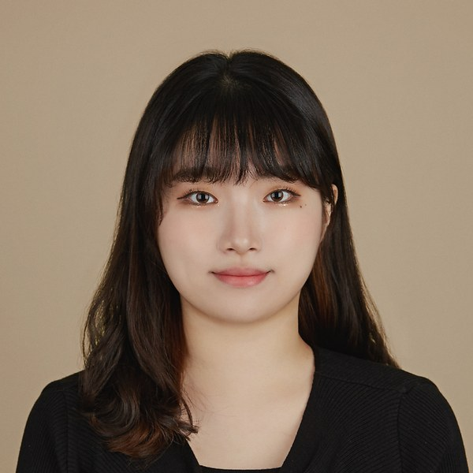
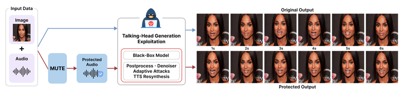
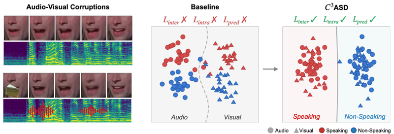
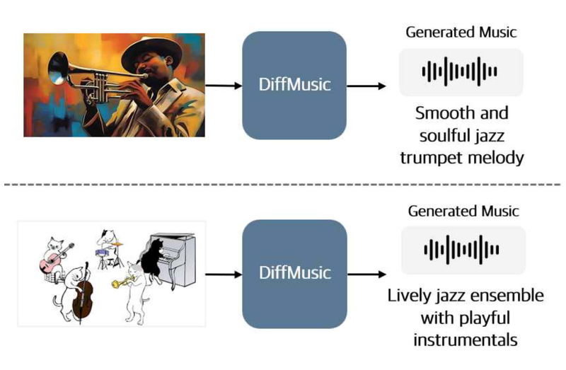
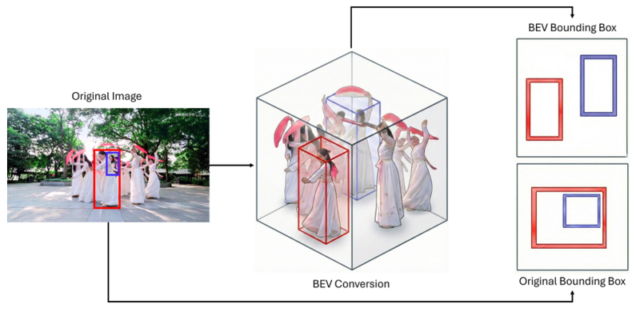
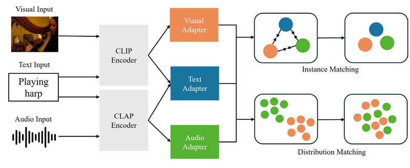
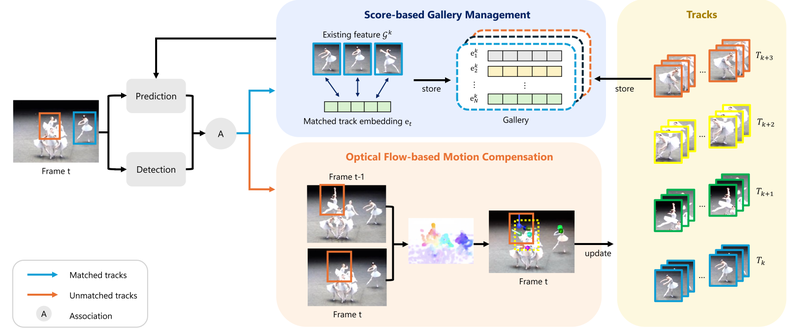
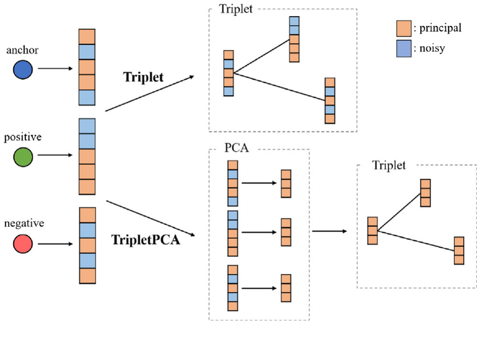

Ph.D. Student · CVML Lab, Chung-Ang University
I am a Ph.D. student in the Computer Vision and Machine Learning (CVML) Lab at Chung-Ang University, advised by Junseok Kwon.
My research focuses on cross-modal generation and understanding across vision and audio. I am particularly interested in image-to-music generation with diffusion models, audio-visual learning such as active speaker detection and voice protection, and robust visual and multi-object tracking.
I also founded and led Handu Inc. (㈜핸듀) as CEO, building deep-learning products such as handwriting OCR for education services. I received my M.S. in Computer Engineering from Chung-Ang University.

* denotes equal contribution. † denotes corresponding author.

Protects a speaker's voice from being exploited by talking-head generators by breaking the alignment between audio and facial motion at multiple levels.

Enforces audio-visual consistency at the embedding, sequence, and prediction levels to keep active speaker detection robust under noise, occlusion, and modality corruption.

Generates music that matches the content and mood of a single image by leveraging diffusion-based representations, with an efficient generation pipeline. (extended version of our ACCV-W diffMusic)

Tracks multiple objects without camera calibration by using scale-invariant topological depth cues and gating associations by adaptive uncertainty.

Aligns multiple modalities around a shared text anchor through optimization at two levels.

Keeps identities stable through occlusions by adaptively managing appearance features and compensating for camera motion.
A multi-stage pipeline that turns visual inputs into music aligned with the scene's context.

Learns robust embeddings directly from corrupted images with a triplet loss that also reduces feature dimensionality.
Generates tracking proposals via optimal transport under the Wasserstein distance.
Tracks small drones by voting over object proposals.
Government and industry-funded projects at Chung-Ang University.